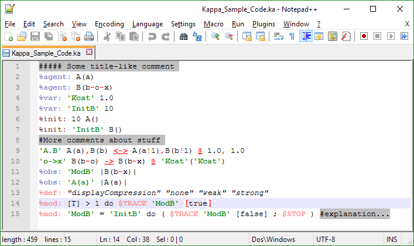

KaSim Development Homepage
A rule-based language for modeling protein interaction networks
Job offer The Kappa team is looking for programmers. Take a look at the proposal.
Get it
- The released version binaries
- The development version source code and (hopefully) nightly-builds binaries
Learn it
The reference manual of the development version is available here. The stable versions are distributed as PDF with the binaries.
Jean Krivine teaching page provides matierial to start with KaSim.
Use it
Compiling the simulator & analyzer
Maybe the most valuable place to see how to compile KaSim is our continious integration script.
Installing the packages listed in the apt section allows you to go from a fresh ubuntu installation to somewhere where KaSim compiles. The build section shows that make should be enough to get the binaries when the dependencies are there.
Building a kappa model
Under Linux, we recommend using the GNU Emacs text editor because it has a Kappa mode that you can install.
Under Windows, there is a simple syntax highlighter for the Notepad++ text editor. It looks like this:
To install, just download the highlighter .xml file, then go to Notepad++'s Language Menu -> DefineYourLanguage -> Import, and select the file you just downloaded.
In any case, you will need Graphviz or any graph vizualizator that understands the dot format to draw generated graphs.
Pretty printing Kappa code in LaTeX
For pretty LaTeX printing, there is a language definition for the listings package available here, with a demo texfile here.
Joining the discussion
A google group of Kappa users is there to handle communication between us.
Fix
Please report any issue.
Interact at low level
You could use KaSim as an OCaml library. The detail of the API is online.
Misc.
Old material
About
Kappa, RuleStudio, and RuleBase (formerly Cellucidate.com) were developed at Plectix BioSystems and purchased by Harvard Medical School in the spring of 2010 for use by the academic community.